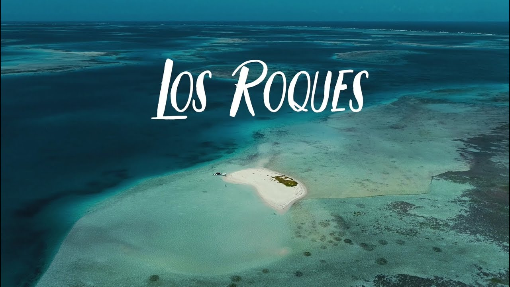
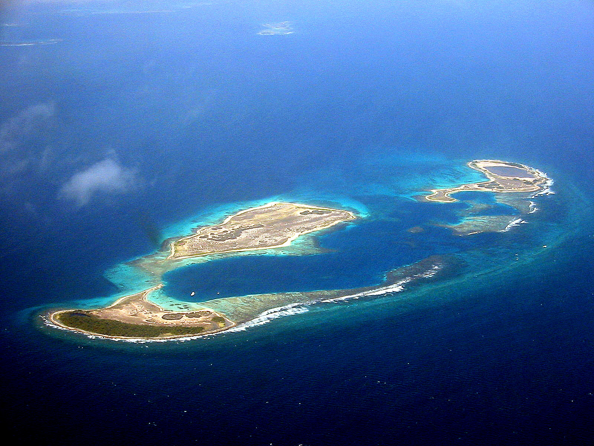
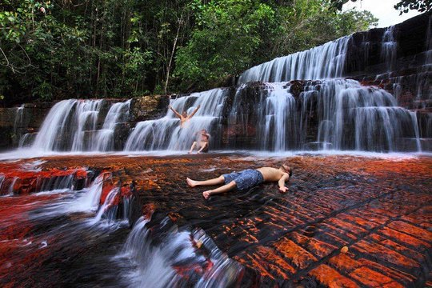
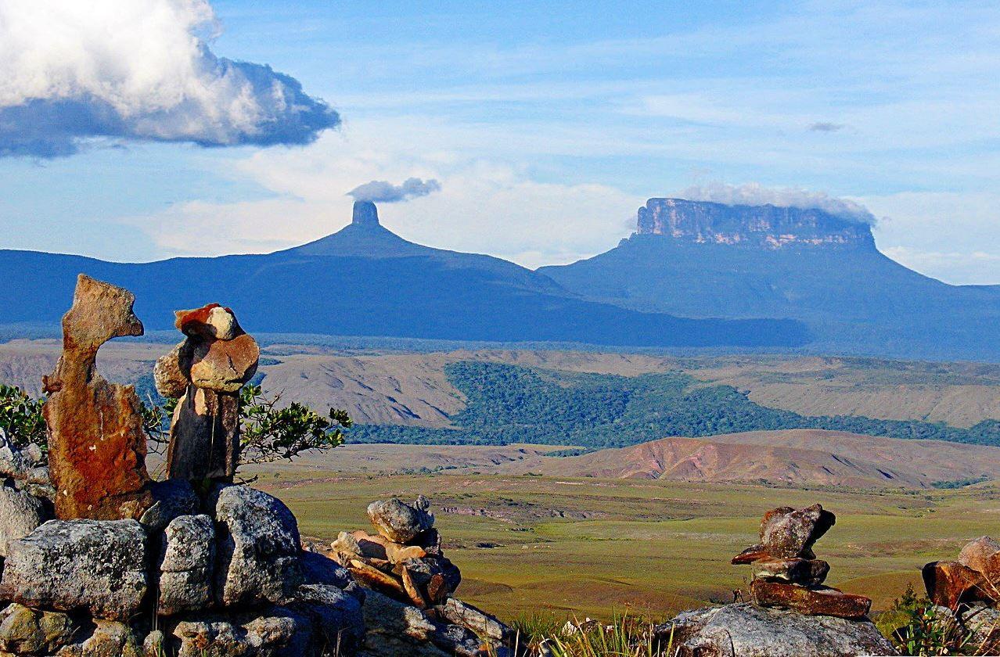
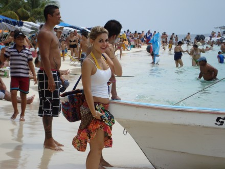
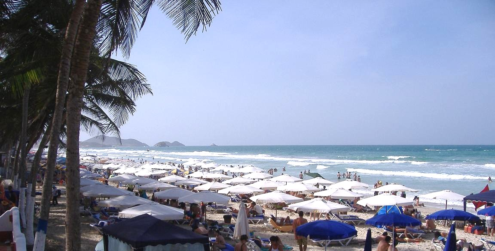

Los Roques

Los Roques, Venezuela, is an archipelago surrounded by corals and beaches. It includes less than 100 miles
north of Caracas in the Caribbean Sea region and is the largest saltwater on the planet. Fishing ground.
Under the constant rush of sea water, the sand of Los Roques became as fine as flour, and it seemed to step on the cotton.
Sitting on the beach by the sea, looking at the sea in the distance, it seems that people will be dissolved in a sea of blue.
La gran sabana/ the big forest
 If you are going to South America to explore Machu Picchu, visit the Iguazu Falls and hike through
Patagonia, then you must explore La Gran Sabana. Gran Sabana is one of the most beautiful landscapes
in Canaima Park in southern Venezuela. It is the fourth largest national park in the world and is
a UNESCO World Heritage Site. Gran Sabana is an area with bushes and table-shaped mountains, called
by the aborigines of Tepuyies. The park also boasts the world's largest waterfall, Angel Falls, and
a free fall nearly 1 km. This is a very beautiful area to understand and understand the beauty of
Venezuela, don't worry, in this place, every visitor is always popular, and the problems that plague the country are far from there.
Margarita
 Located about 25 miles from the mainland and accessible via air or ferry, Venezuela's mountainous
Margarita Island provides Caribbean-style beaches and access to windsurfing, golf, horseback riding
and scuba with a laid-back South American vibe. It's comprised of two islands connected in the middle
by the mangrove-filled lagoon of La Restinga National Park. Most development falls on the isle's
eastern side around busy Porlamar, the capital La Asunción and colonial Pampatar, founded in 1535